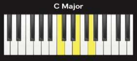
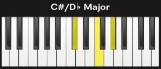
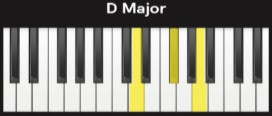
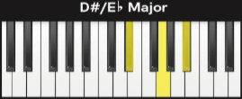
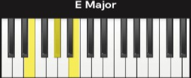
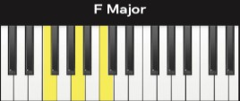
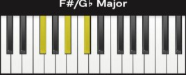
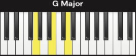
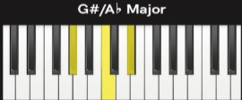
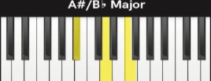

88 Keys

Chords
A major chord is a group of three notes that sound happy and bright. It has a root note, a major third, and a perfect fifth. For example, a C major chord has the notes C, E, and G. Major chords are very common in music and are important for playing songs on the piano or other instruments.
C Major (play chord!)

C#/D Major (play chord!)

D Major (play chord!)

D#/E Major (play chord!)

E Major (play chord!)

F Major (play chord!)

F#/G Major (play chord!)

G Major (play chord!)

G#/A Major (play chord!)

A Major (play chord!)

A#/B Major (play chord!)

B Major (play chord!)

Chords
A minor chord is a group of three notes that sound sad or softer compared to major chords. It has a root note, a minor third, and a perfect fifth. For example, a C minor chord has the notes C, E♭, and G. Minor chords are very common in music and are important for playing songs on the piano or other instruments.
C Minor (play chord!)

C#/D Minor (play chord!)

D Minor (play chord!)

D#/E Minor (play chord!)

E Minor (play chord!)

F Minor (play chord!)

F#/G Minor (play chord!)

G Minor (play chord!)

G#/A Minor (play chord!)

A Minor (play chord!)

A#/B Minor (play chord!)

B Minor (play chord!)